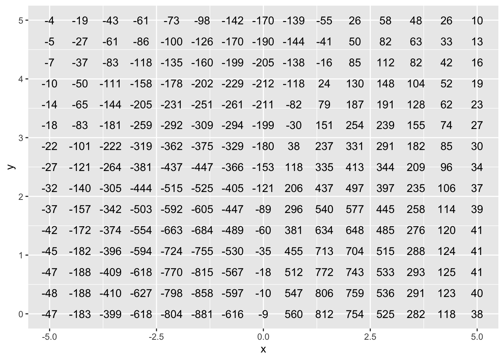
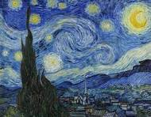
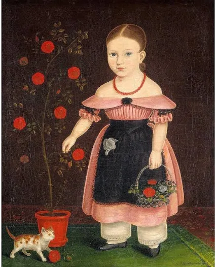
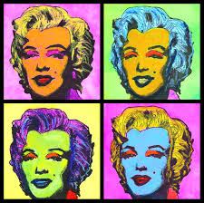
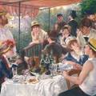
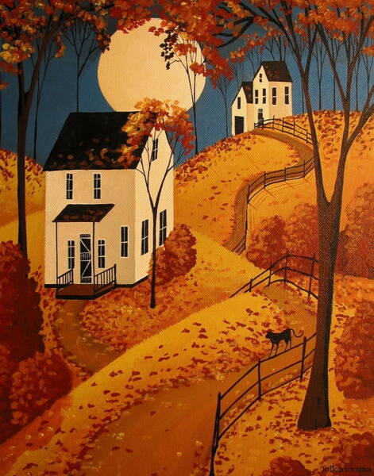
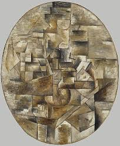
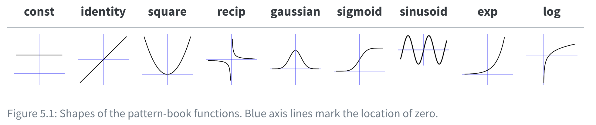

5 2025-01-16 class notes
5.1 Administration
I want to arrange a 5-10 minute meeting (or longer, if you want) with each of you, just to get to know you a little.
- I’m free the rest of this morning, and from about 2:30 - 4:00 this afternoon. Or tomorrow.
I’m going to start looking at reading questions, exercises, and such on a regular schedule.
- If you are still shakey about submitting your work, let’s fix it!
- I want to see submissions from all of you on every document from now on.
Grading. The STEM faculty have set a rule for instructors about grading.
Half or more of graded content should be presented and done in a classroom setting.
- I’m thinking to make this about 50%. Split more or less evenly between class participation and short (15 min) inclass quizzes roughly once a week.
- I won’t necessarily tell you in advance about such a quiz. If you need to make one up, we can do it in my office.
- I’ll adopt a more formal way of keeping track of contributions in class—random sampling. Don’t read too much into this, and absolutely feel free to chip in whenever you want or fend off a question that you would rather someone else answer.
For instance ….
todays_roster()5.1.1 Class roster for Fri Apr 4
Alistair Haglund
Simon Rinehart
Grace Price
Ian Wicht
Max Litvinenka
Max Weinstein
Nicole Kargin
Everett McAlister
Almar Tishenko
5.2 Where we are
- You have been introduced to two systems for notation:
- more or less traditional math notation
{mosaicCalc}computer notation
- We’ve talked about three big concepts you should be becoming very familiar with:
- Space and dimensionality
- When I write \(\sin(x)\) or
sin(x)I’m talking about the input coming from a space namedx. - When I write \(f(x,y) \equiv y \sin(x)\) (or
f <- makeFun(y*sin(x) ~ x & y)) the input space has two dimensions.
- When I write \(\sin(x)\) or
- Quantity
- the amount of some stuff.
- each quantity has in principle two components:
- a number
- units that specify how the quantity is measured, e.g. m/s or m/s2
- Gotcha! We’ll use the word “dimension” to describe the “kind of stuff”, for instance, M L T-2. But you’ll have to determine from context whether we’re talking about the dimension of a space or the dimension of a quantity. (Always feel free to ask!) There is a relationship between to two meanings of “dimension,” but we don’t need to get into it.
- Function - A relationship between one or more (well, … “zero or more”) inputs and a single output. - The space of inputs is called the domain. - The space of output is called the range
- Space and dimensionality
Aside: Good (simple) quiz questions might be - “Define what we mean by a function?” - “What is the dimensionality of the input space to some function \(f()\)?” (that I’ll describe) - “What’s the conceptual difference between the units of a quantity and the dimension of that quantity?”
- Graphics
- You’ve learned to make two kinds of graphics using
{mosaicCalc}software:- A “graph” of a function of one input.
- A “contour plot” of a function of two inputs.
- You know that you have to tell the computer which part of the input space (“domain”) to show in the graph and that you do this with an argument that looks like
domain(x=-5:5, y = 10:50) - As we move along, we’ll need a few other types of graph, e.g.:
- parametric plot
- vector field (or “flow” field)
- Most of you learned pretty well in high school how to “read” a graph of \(f(x)\).
- You’re learning how to read a contour plot, e.g. interpret it as a landscape, figure out the value of the output when the input is between two contours, figure out whether movement in a particular direction leads you uphill or downhill.
- You’ve learned to make two kinds of graphics using
Aside: A good quiz question would be a completely artificial task … “Draw a few contours of this function of two variables.”
5.3 Today’s topic: “Pattern-book functions”
Simile: “Shall I compare thee to a summer day?”
Metaphor: “… and summer’s lease hath all too short a date.”
A metaphor for the pattern-book functions … styles of painting
| Impressionism | American Primitive | Pop art | Cubism |
|---|---|---|---|
|  |  |  | |
|  |  |  |
Each pattern-book function is a reference example of each style of art. We will use many variations on each style and call these “basic modeling functions.”
Shapes of the pattern book functions:

| Name | Traditional notation | R notation |
|---|---|---|
| exponential | \(e^x\) | exp(x) |
| logarithm (“natural log”) | \(\ln(x)\) | log(x) |
| sinusoid | \(\sin(x)\) | sin(x) |
| square | \(x^2\) | x^2 |
| identity | \(x\) | x |
| one | \(1\) | 1 |
| reciprocal | \(1/x\) or \(x^{-1}\) | 1/x |
| gaussian | \(\dnorm(x)\) | dnorm(x) |
| sigmoid | \(\pnorm(x)\) | pnorm(x) |
You need to:
- From the name of a pattern-book function, be able to draw a pretty accurate graph of the reference example.
- From a graph of the reference example, say the name of the function
- For the functions that we write as formulas (e.g. square is \(x^2\)), know the formula. Other functions you just need to know the name, the traditional notation, and the R notation.
- Know the domain of each pattern-book function.
- Know the exact output value for one or more “special” values of the input, e.g. \(\ln(1)\) or \(\sin(0)\).
- Later: For each function, know a modeling context where use of the function is standard. E.g.
- exponential: radioactive decay, cooling
- sinusoid: waves
- sigmoid: growth in a finite environment
- Eventually: Wonder how you could ever have confused an exponential function with a power-law function.
- Later: say how a basic-modeling function differs from the reference example
- Later: put together entirely new functions by combining pattern-book functions.
- Later: memorize the derivative and anti-derivative of each pattern-book function.
5.4 Activity
In small groups: Pick three pattern-book functions. Find some special inputs where the output is easy to remember, e.g. the output is zero or the output is an integer.